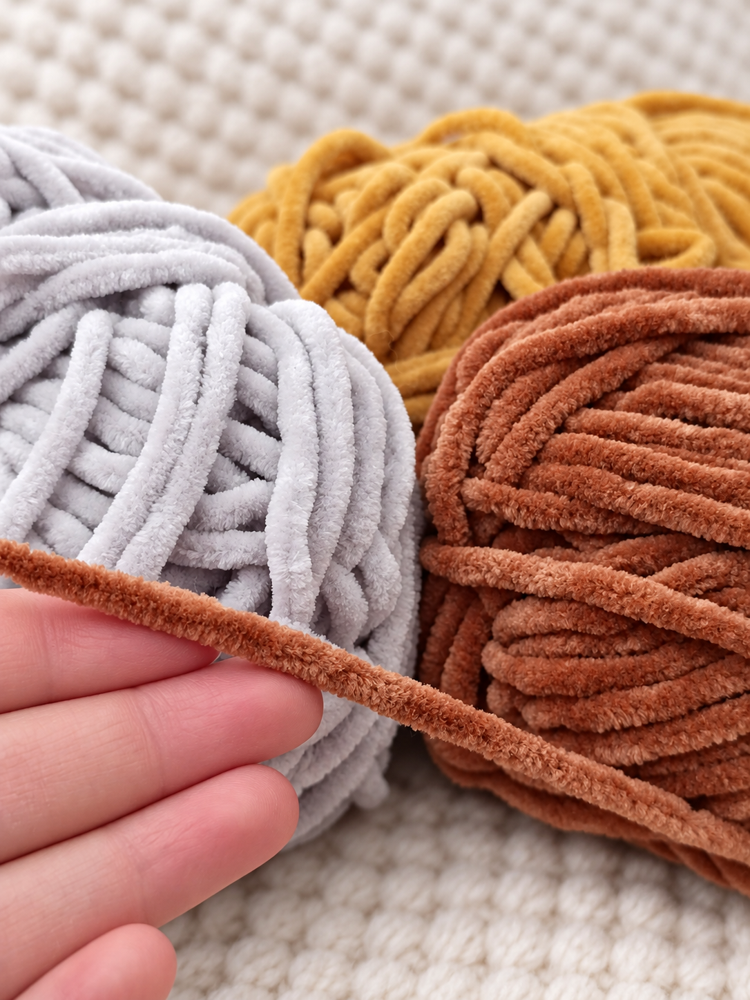
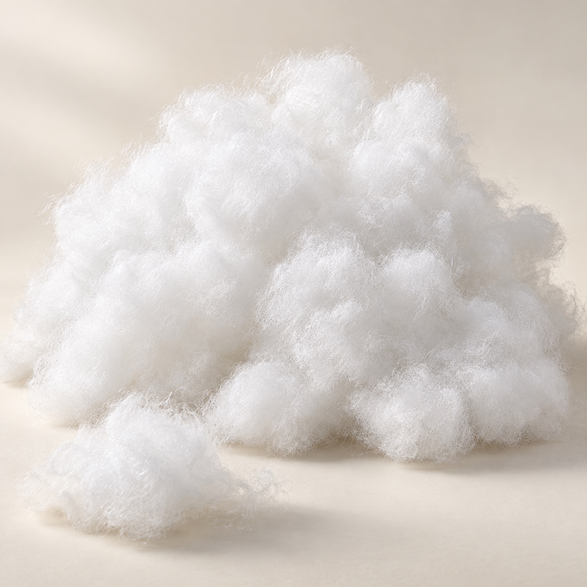
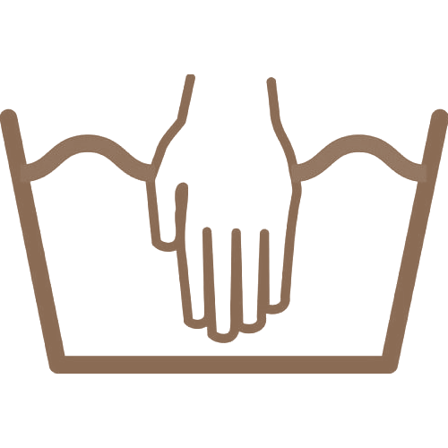
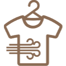
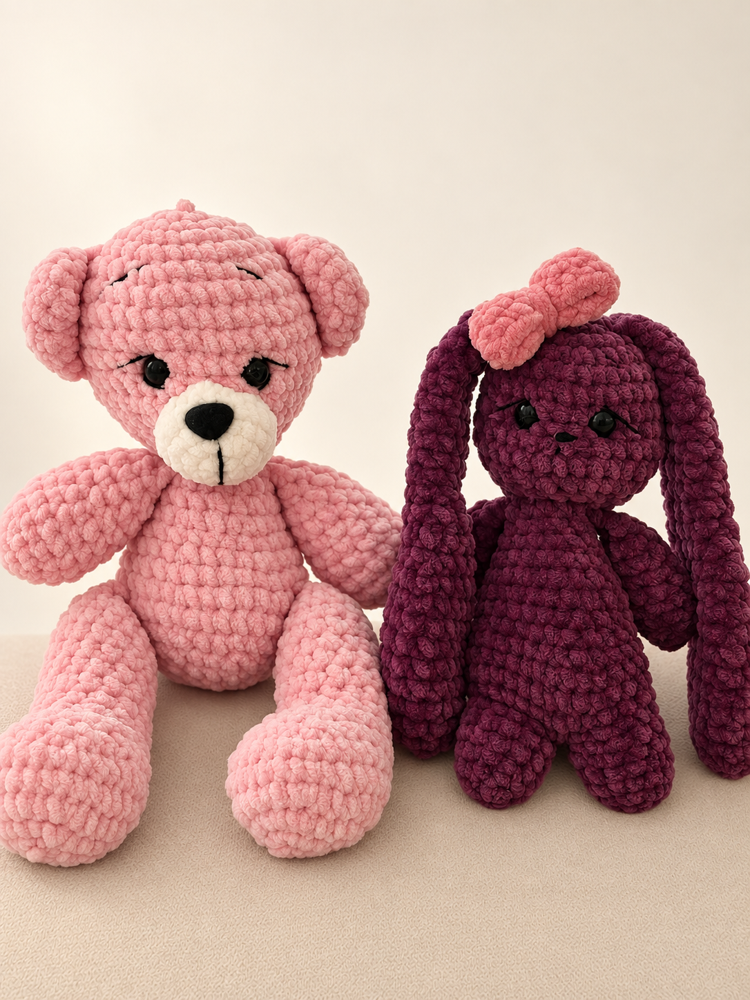
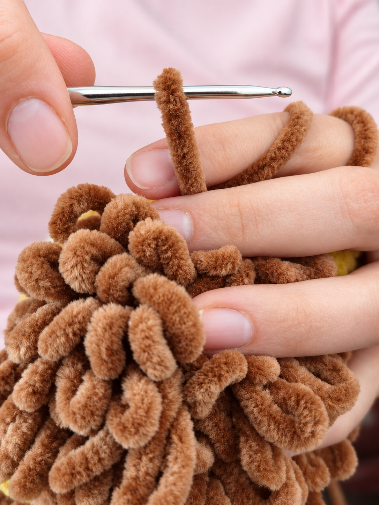

Naki & Maki · heklane igračke
Plišani blizanci
Mekane igračke koje dve sestre heklaju kod kuće - petlju po petlju, sa puno ljubavi, da postanu nečiji omiljeni prijatelj.


O nama
Sestre, mame i zaljubljenice u heklanje
Iza Plišanih blizanaca stojimo nas dve, Jeca i Goca. Sestre smo, a u isto vreme postale smo i mame.
Dok smo zajedno bile trudne, poželele smo da svojim bebama same napravimo prve igračke. Tako smo počele da heklamo. Prvo medu, pa zeku, pa vuka… i više nismo stale.
Danas pravimo igračke i za druge mališane. Svaku heklamo ručno, pažljivo i sa puno ljubavi. Posebno nas raduje pomisao da će neki naš meda ili zeka postati nečiji omiljeni drugar, onaj koji se nosi svuda i čuva i kad dete poraste.
Materijali
Od čega su naše igračke
Biramo samo materijale koje bismo i same dale svojoj deci - meke, bezbedne i dovoljno izdržljive da traju godinama. Oči i nosići su sigurnosni i dvostruko fiksirani.

Himalaya Baby vunica
Plišana žanil vunica, izuzetno mekana i prijatna na dodir, namenjena baš najmlađima. Ne linja se, ne bode i zadržava boju i posle pranja.

Češljano silikonsko vlakno
Lagano, vazdušasto punjenje koje se ne gruda i vraća oblik posle svakog zagrljaja. Antialergijsko je i može se prati zajedno sa igračkom.
Održavanje
Perite u vrećici za veš, bez centrifuge, sušilice i izbeljivača. Igračku pritisnite uvijenu u peškir, oblikujte rukama i ostavite da se suši na ravnoj podlozi.


Sve je ručni rad
Nema dve potpuno iste igračke. Boje biramo zajedno sa vama, pa svaka igračka nosi nešto od deteta kojem ide - omiljenu boju, omiljenu životinju, rođendansku čestitku.


Iz naše radionice
Sve igračke →